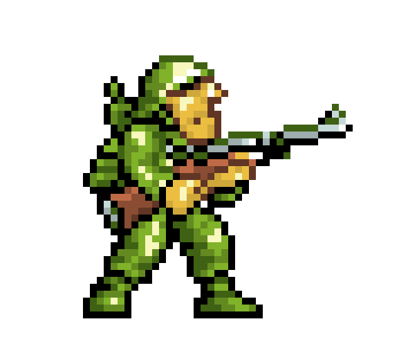

Bienvenido a tu Proyecto Departamental
Crea un video juego de la lista que te mostramos


Crea un video juego de la lista que te mostramos
| Nombre | Género | Descripción |
|---|---|---|
| 100 Ecatepenses dijeron | Juego de Preguntas y Respuestas | Crea un juego de preguntas y respuestas donde los usuarios puedan poner a prueba sus conocimientos en diferentes temas.. |
| Ciberseguridad en Memorama | Juego de Memoria | CCrea un juego de memoria donde los usuarios deban encontrar las parejas de cartas iguales. |
| Armame | Juego de Rompecabezas | Crea un juego de rompecabezas donde los usuarios deban armar una imagen a partir de piezas separadas se debe de terner un catalogo de imagenes por niveles de 10 a 500 piezas. |
| Tesito Esquivando | Juego de Plataformas | Crea un juego de plataformas donde los usuarios deban saltar y esquivar obstáculos para llegar a la meta. |
| LLegando tarde a clase | Juego de Carreras | Crea un juego de carreras donde los usuarios puedan competir en diferentes pistas. |
| Ajedesito | Juego de Ajedrez | Crea un juego de ajedrez donde los usuarios puedan jugar contra la computadora o contra otros usuarios en línea todas las piezas deben de tener una animacion cuando atacan y cuando estan estaticas. |
| Carrera de Practicas | Carrera | Compite contra otros pilotos en una carrera de alumnos a través de obstáculos y curvas peligrosas para poder llegar a entregar las praticas del profesor. |
| Memory Match | Mental | Encuentra las parejas de compañeros de clase iguales en el menor tiempo posible, poniendo a prueba tu memoria y concentración. |
| Brick Breaker | Acción | Destruye los ladrillos con una pelota y una barra, mientras evitas los obstáculos que aparecen en la pantalla. |
| Galactic Defender | Shooter | Protege tu base de los ataques enemigos con diferentes armas y defensas, mejorando tus habilidades y equipo a medida que avanzas. |
| Pinball | Simulación | Juega al clásico juego de pinball, golpeando la bola con las palancas para obtener la mayor puntuación posible. |
| Match Three | Puzzle | Combina tres o más gemas del mismo color para hacerlas desaparecer, ganando puntos y avanzando de nivel. |
| Bomberman | Arcade | Coloca bombas estratégicamente para abrirte paso a través del laberinto y derrotar a tus enemigos. |
| Space Invaders | Shooter | Defiende la Tierra de la invasión alienígena disparando a los enemigos y evitando que lleguen a la superficie. |
| Run and Jump | Plataforma | Corre y salta a través de obstáculos y enemigos, recolectando monedas y power-ups para llegar al final del nivel. |